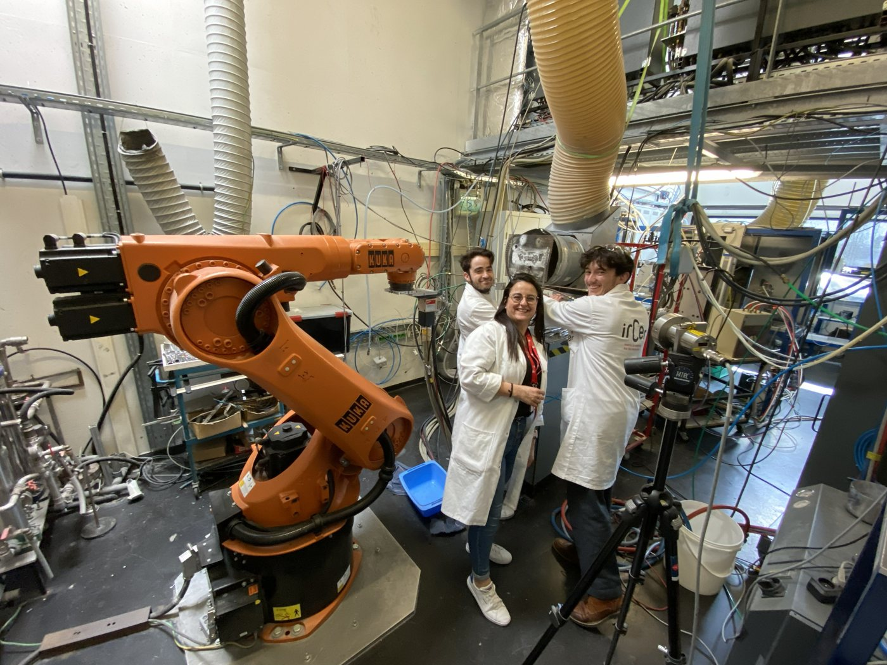
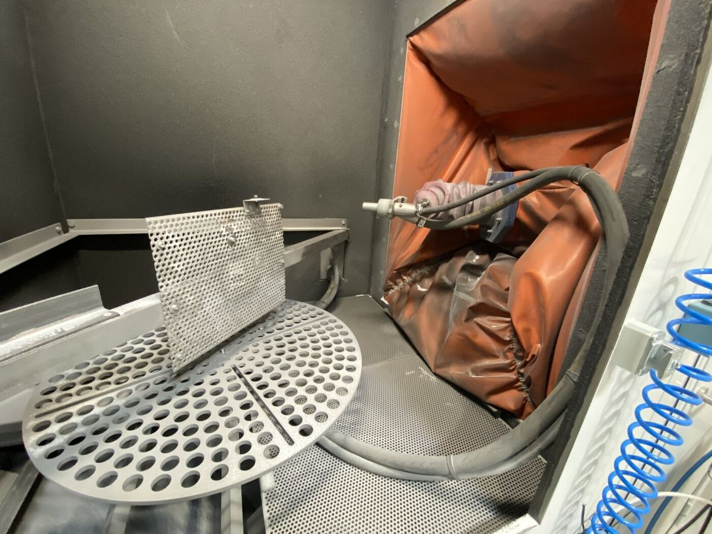
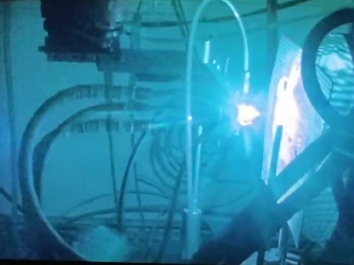
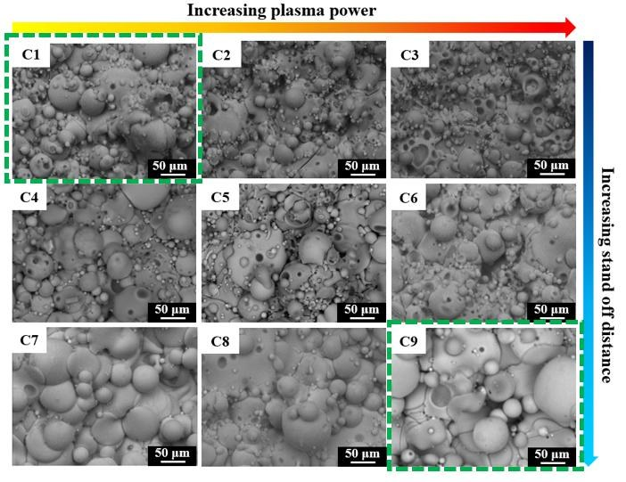
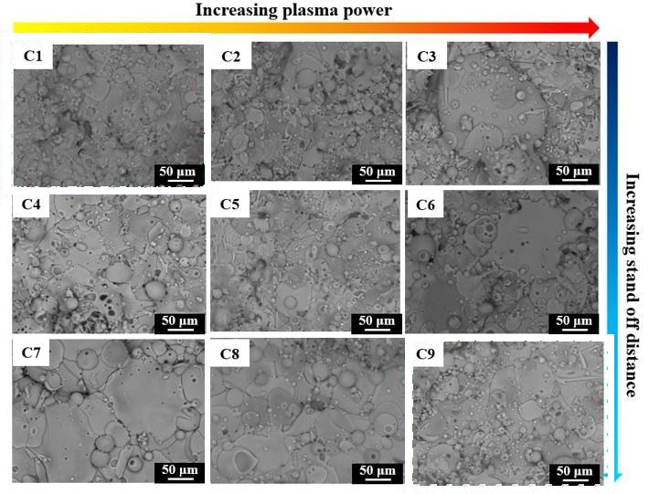
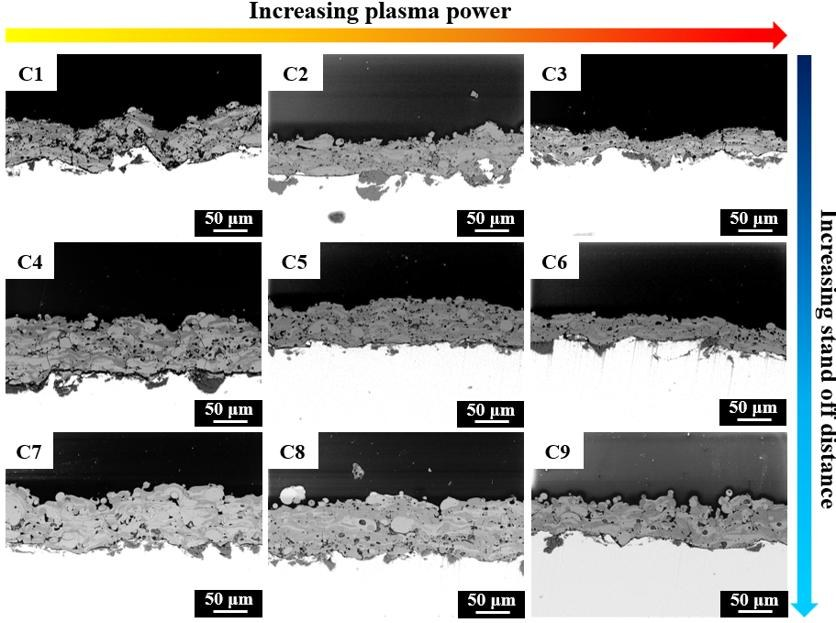
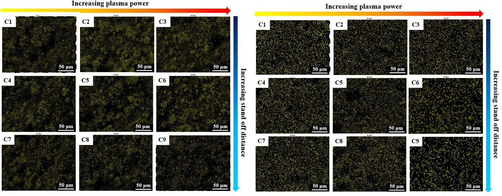
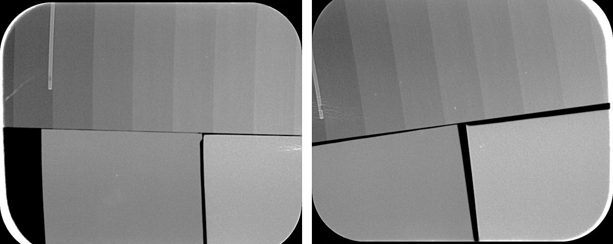
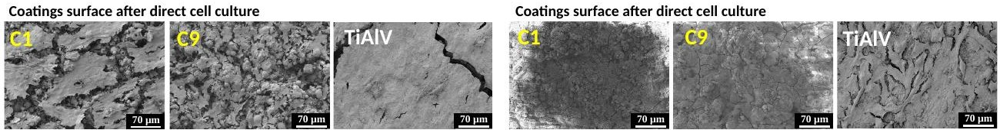

Atmospheric plasma sprayingAtmosphärisches PlasmaspritzenAtmosférické plazmové striekanieProjection plasma atmosphériqueProyección por plasma atmosférico
A plasma jet melts the bismuth-containing glass particles and projects them onto titanium alloy, where they flatten and build the coating.Ein Plasmastrahl schmilzt die bismuthaltigen Glaspartikel und schleudert sie auf die Titanlegierung, wo sie sich abflachen und die Beschichtung aufbauen.Plazmový prúd roztaví sklenené častice s obsahom bizmutu a vrhá ich na titánovú zliatinu, kde sa sploštia a vytvoria povlak.Un jet de plasma fond les particules de verre contenant du bismuth et les projette sur l’alliage de titane, où elles s’aplatissent et forment le revêtement.Un chorro de plasma funde las partículas de vidrio con bismuto y las proyecta sobre la aleación de titanio, donde se aplastan y forman el recubrimiento.
The techniqueDas VerfahrenTechnikaLa techniqueLa técnica
Plasma spraying is the standard industrial route for coating hip and dental implants. RADIOBIOCOATS used it to deposit both the silicate and the borate bismuth-containing glasses.Plasmaspritzen ist das industrielle Standardverfahren zur Beschichtung von Hüft- und Zahnimplantaten. RADIOBIOCOATS nutzte es, um sowohl das bismuthaltige Silikat- als auch das Boratglas abzuscheiden.Plazmové striekanie je štandardná priemyselná technika na povlakovanie bedrových a zubných implantátov. RADIOBIOCOATS ju využil na nanesenie silikátového aj borátového skla s obsahom bizmutu.La projection plasma est le procédé industriel de référence pour revêtir les implants de hanche et dentaires. RADIOBIOCOATS l’a utilisée pour déposer les verres silicate et borate contenant du bismuth.La proyección por plasma es la vía industrial habitual para recubrir implantes de cadera y dentales. RADIOBIOCOATS la usó para depositar los vidrios de silicato y de borato con bismuto.
The thermal spray team of IRCER at the University of Limoges carried out the plasma spray experiments together with the project.Das Thermal-Spray-Team des IRCER an der Université de Limoges führte die Plasmaspritzversuche gemeinsam mit dem Projekt durch.Tím termického striekania IRCER na Université de Limoges uskutočnil experimenty s plazmovým striekaním spolu s projektom.L’équipe de projection thermique de l’IRCER à l’Université de Limoges a réalisé les essais de projection plasma avec le projet.El equipo de proyección térmica del IRCER de la Universidad de Limoges realizó los ensayos de proyección por plasma junto con el proyecto.
A systematic study of plasma power, spray distance and gas mixture identified the conditions that give compact coatings while keeping the glass structure.Eine systematische Studie von Plasmaleistung, Spritzabstand und Gasgemisch ermittelte die Bedingungen, die kompakte Beschichtungen ergeben und zugleich die Glasstruktur erhalten.Systematická štúdia výkonu plazmy, striekacej vzdialenosti a zmesi plynov určila podmienky, pri ktorých vznikajú kompaktné povlaky so zachovanou štruktúrou skla.Une étude systématique de la puissance du plasma, de la distance de projection et du mélange gazeux a identifié les conditions qui donnent des revêtements compacts tout en conservant la structure du verre.Un estudio sistemático de la potencia del plasma, la distancia de proyección y la mezcla de gases identificó las condiciones que dan recubrimientos compactos conservando la estructura del vidrio.






Impactful resultsWichtige ErgebnisseVýznamné výsledkyRésultats marquantsResultados destacados












All radiographsAlle RöntgenbilderVšetky röntgenové snímkyToutes les radiographiesTodas las radiografíasIn vitro testsIn-vitro-TestsTesty in vitroTests in vitroEnsayos in vitroOther techniquesWeitere VerfahrenĎalšie technikyAutres techniquesOtras técnicas